- Poner muy poquito de aceite de oliva en la sartén.
- Meter la carne picada y cocinar a fuego medio-bajo junto con el sazón y la salsa Lizano.
- Picar el 1/4 a 1/2 de cebolla, el pimiento, y el ajo.
- Cuando la carne ya esté un poco más cocinada como en la foto, echamos la mitad del pimiento rojo, la mitad de la cebolla, el ajo, y las dos ramitas de tomillo. Bajamos el fuego a fuego bajo.
- En otra cazuela, echar un poquitín de aceite con las dos latas de kidney beans con su jugo, y añadir la otra mitad del pimiento rojo y de la cebolla. Añadir sal. Todo esto a fuego bajo, ya que los frijoles ya están cocinados.
- Cuando el agua de los frijoles hierva, está listo. Se pone todo en la sartén junto a la carne y a comer.
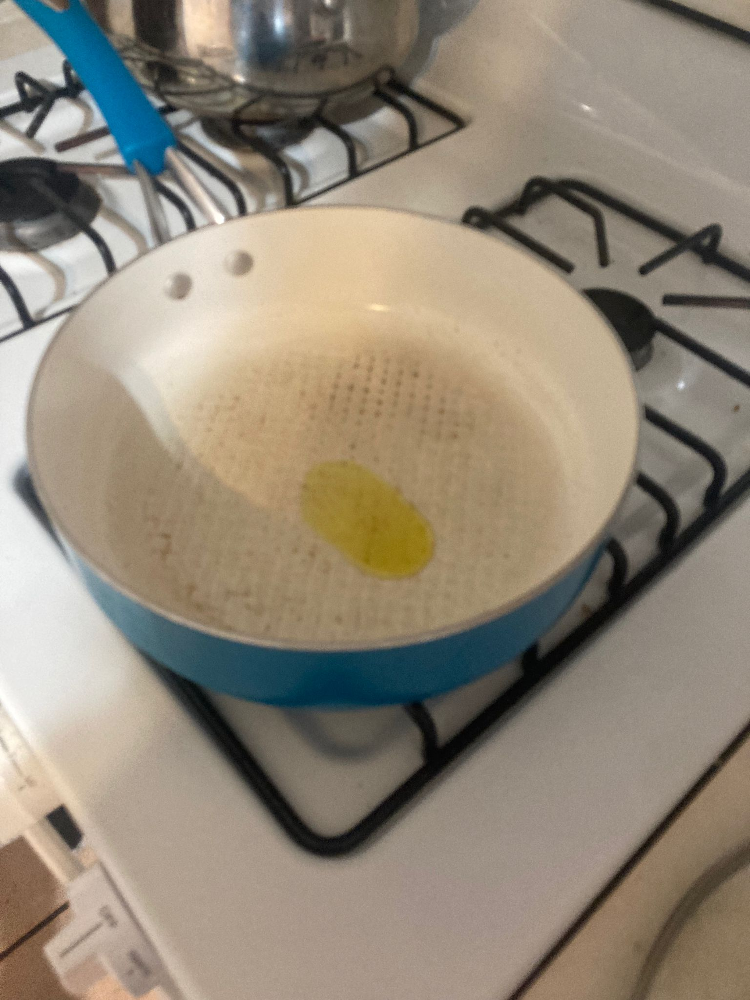
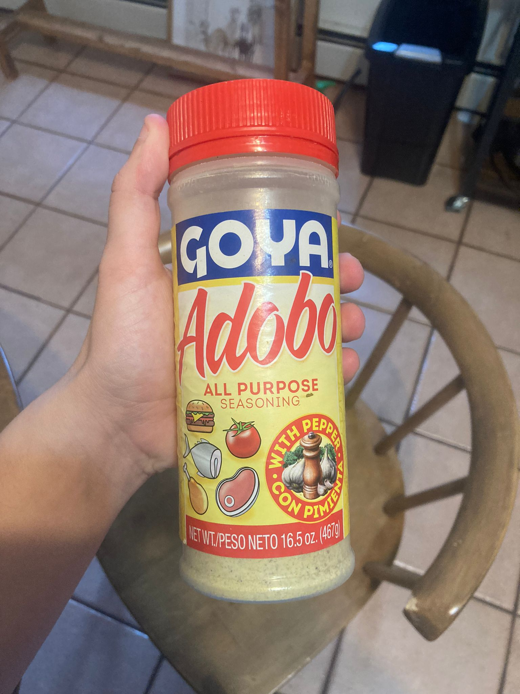
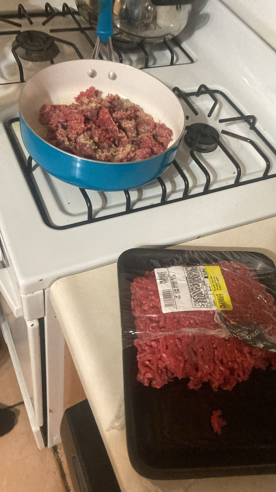
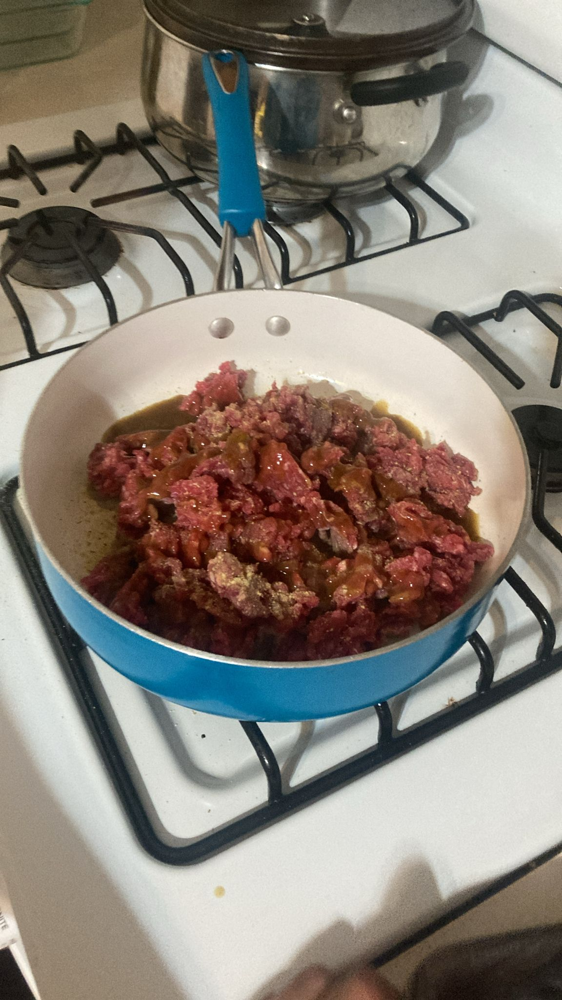
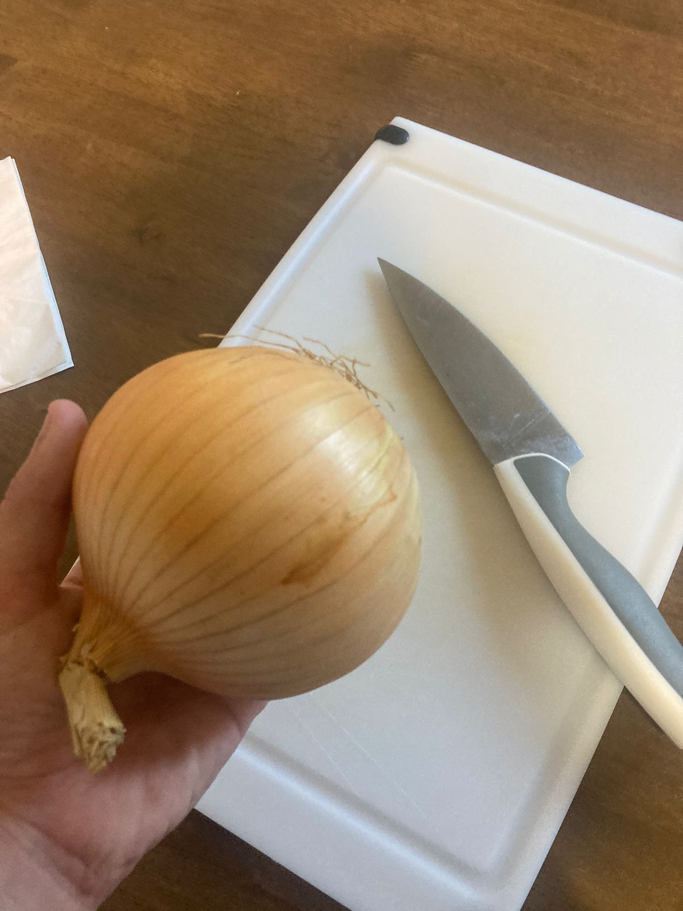
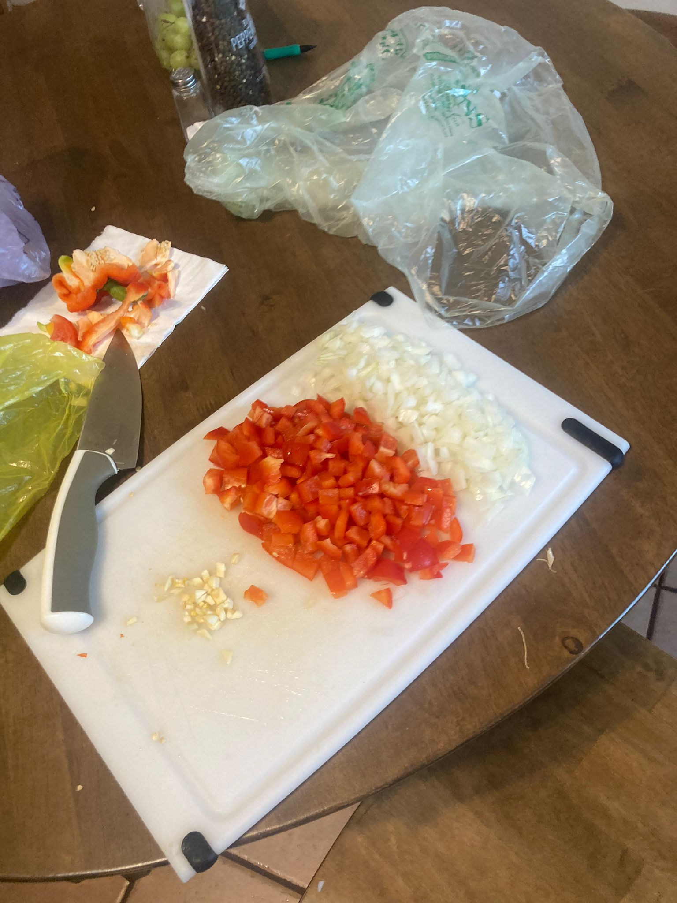
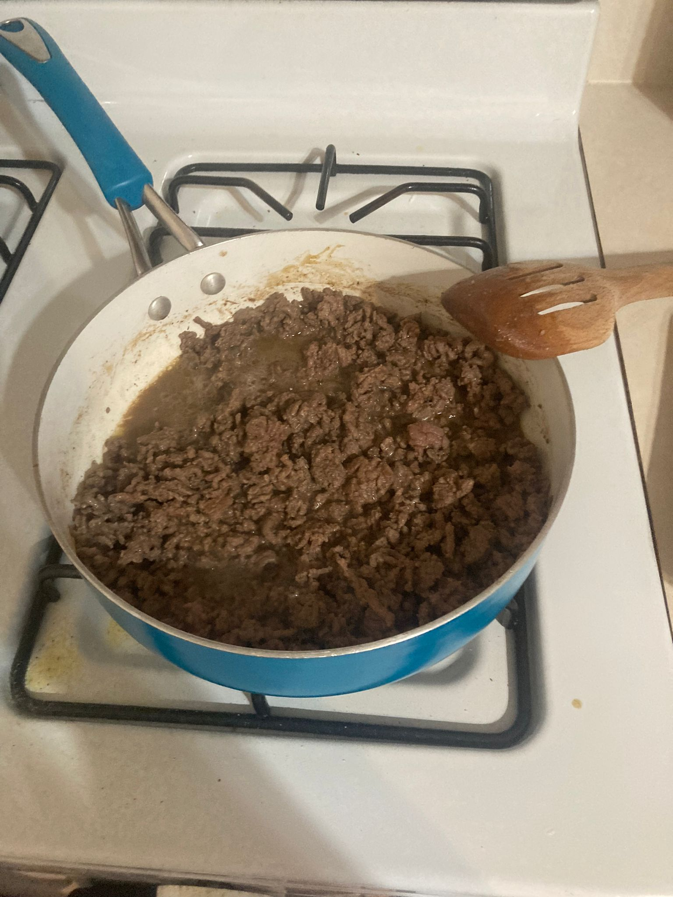
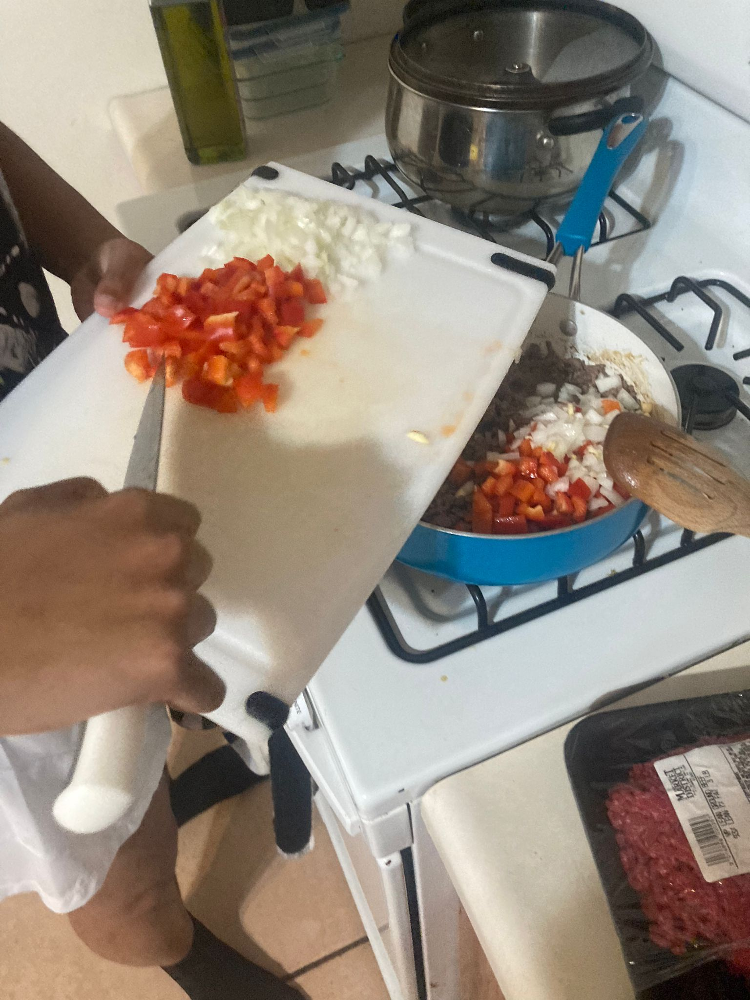
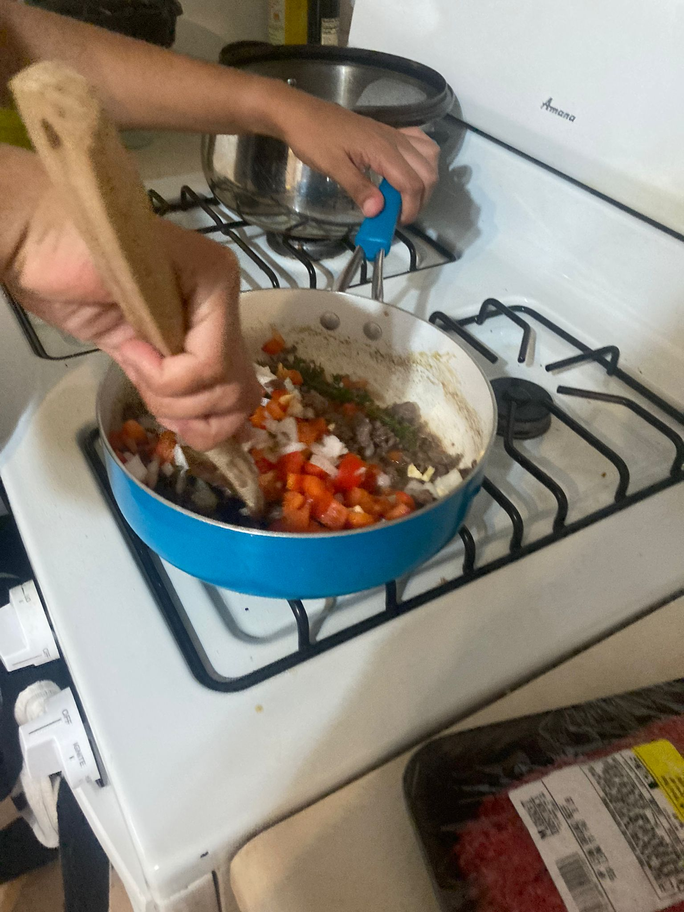
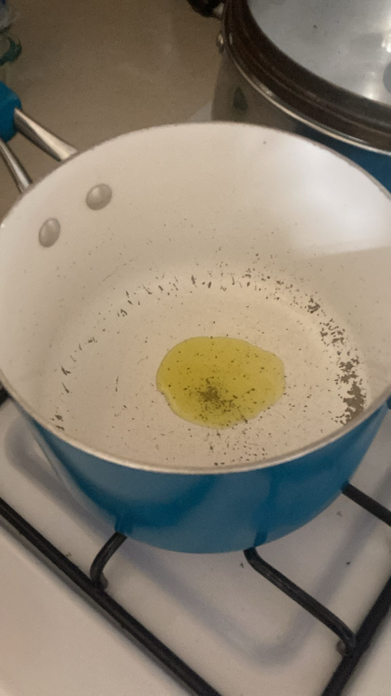
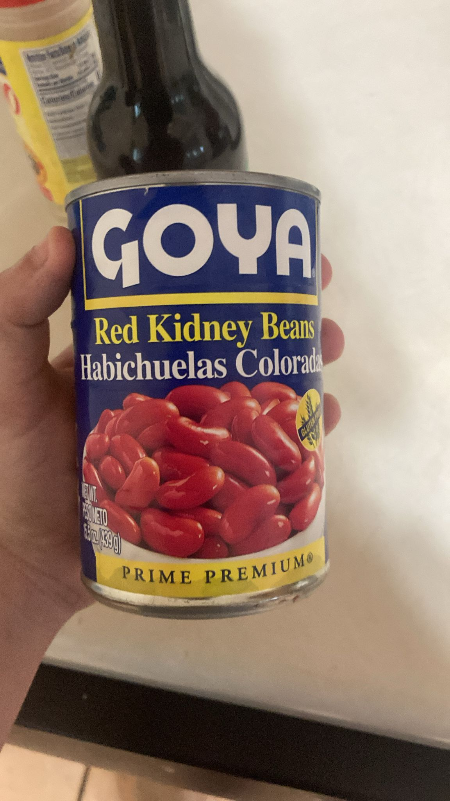
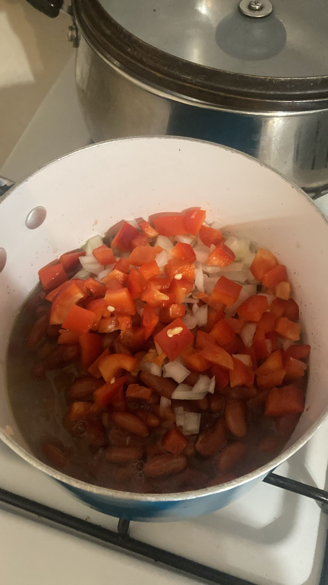
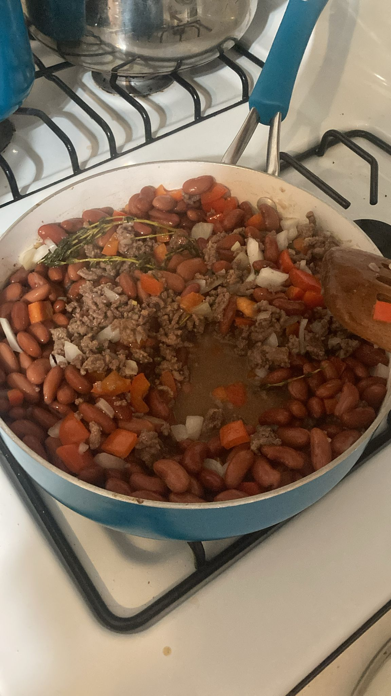
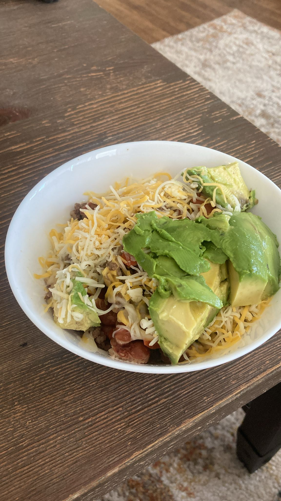